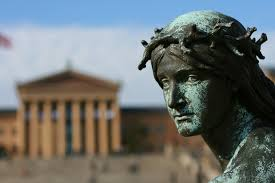

Life of a Stoic
The great Philosophers left us with a wealth of knowledge to help guide us along the way. Many of these knowledge sets
came in the form of schools - my favourite being Stoicism. As I read the teachings of Epictetus and Marcus Aurelius, I am
more energized to live life and continue on my day. Though Stoicism doesn't guarantee that life will be perfect, it sure does
a wonderful job of letting me realize that I can only control so much and no more. This mindset brings me so much solace.
Stoicism sees wisdom as the highest virtue. It strives to achieve good character, and an understanding of preferred indifferences. Life will never be perfect, but with
a little philosophy in our lives it becomes more bearable. I don't know where life will take me, but I want to always have the knowledge of those before me in my arsenal.